A folio from the bookshelf
The rooms
A FORTRAN punched-card interpreter, and a deck that computes Iannis Xenakis’s sieves, made twenty-five times over: first plainly, then in a run of styles, then as a desk, a desktop, a puzzle, a magazine and at last a room to wander in. Each print is pinned up where it was taken; press one to go in.
The working core
The interpreter and the sieves made to work on a plain page, then laid out two ways.
Nos. 1 to 3
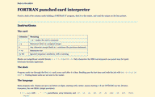
No. 01The working coreThe interpreter and the sieve solver made to work, in black text on white with the least styling.The first room.Its line in the genealogy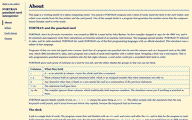
No. 02Sub-pagesThe one long scroll split into sub-pages for the instructions, the editor, the card viewer and the output.From No. 01.Its line in the genealogy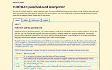
No. 03TabsThe same four parts behind tabs: the layout every themed version starts from.From No. 01.Its line in the genealogy
Eleven styles
The page with tabs dressed eleven ways, from thermal paper and microfiche to Dada and film.
Nos. 4 to 14
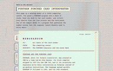
No. 04Thermal paper and typewriterPrintouts on thermal paper and typewritten documents: monochrome, serif, yellowed, with scanner dust.From No. 03.Its line in the genealogy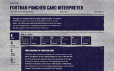
No. 05MicroficheHigh contrast, monochromatic, grainy and ragged, as a frame of microfiche on a reader.From No. 03.Its line in the genealogy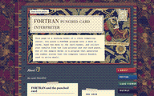
No. 06ScrapbookAn eclectic scrapbook of collected paper artifacts, and the first of the miscellanea.From No. 03.Its line in the genealogy- No. 07Cray-2The bold colours and geometric shapes of the Cray-2 supercomputer.From No. 03.Its line in the genealogy
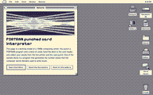
No. 08Ordered ditheringVintage computer graphics: ordered dithering with at most eight steps to a channel.From No. 03.Its line in the genealogy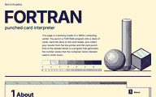
No. 09Swiss style in hatchingThe Swiss and International styles, with hatching in place of colour.From No. 03.Its line in the genealogy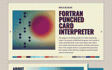
No. 10HalftoneEverything printed through a halftone screen.From No. 03.Its line in the genealogy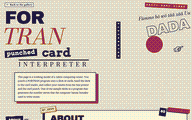
No. 11DadaThe page as a Dada collage, with experimental decks of chance.From No. 03.Its line in the genealogy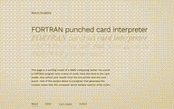
No. 12The BackroomsThe look and feel of the Backrooms: the page as a liminal space, an echo of the past.From No. 03.Its line in the genealogy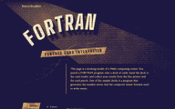
No. 13German ExpressionismThe look and cinematography of German Expressionist film.From No. 03.Its line in the genealogy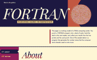
No. 14Reflection in a Dead DiamondThe cinematography and set design of Cattet and Forzani’s film: bold, slightly odd 1960s design.From No. 03.Its line in the genealogy
Crossings
The styles crossed with one another into a desk, a desktop, a game and a magazine of code art.
Nos. 15 to 18
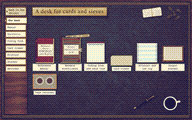
No. 15A physical workspaceA skeuomorph of a desk, its materials in books, notebooks and decks, with music decks and a reel-to-reel player.From No. 04 and No. 06.Its line in the genealogy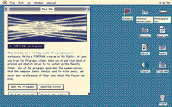
No. 16A digital workspaceA vintage computer desktop with a buffer editor and a player program, and v15’s miscellanea as documents.From No. 08, with a part of No. 15.Its line in the genealogy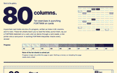
No. 17A game of punch cardsv9’s style for a puzzle game that teaches how to write and use punch cards.From No. 09.Its line in the genealogy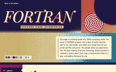
No. 18Code art in halftonev14’s graphics through v10’s halftone, and the experimental decks of v11 and v12, framed by code art.From No. 10 and No. 14, with a part of No. 11 and No. 12.Its line in the genealogy
The workspace
The desk and the desktop brought into one room, then drawn again and again until it was a place to wander.
Nos. 19 to 25
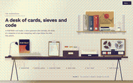
No. 19The workspace with a magazinev15’s desk tightened, with v18 as a magazine on it whose decks can be run.From No. 15 and No. 18.Its line in the genealogy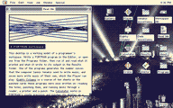
No. 20Puzzles on the desktopv17’s puzzles inside v16’s desktop, its graphics refined in v17’s design language.From No. 16 and No. 17.Its line in the genealogy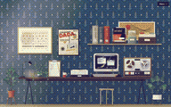
No. 21A desk with a computerOne workspace: v19’s desk with a computer on it that runs v20’s desktop, each half in its own style.From No. 19 and No. 20.Its line in the genealogy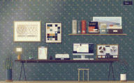
No. 22Vectorv21 in one style: the computer redrawn as a modern vector interface, and things in the room that can be changed.From No. 21.Its line in the genealogy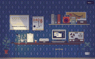
No. 23Pixel artv21 in one style: the room as pixel art, the computer in full-colour pixels.From No. 21.Its line in the genealogy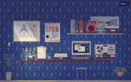
No. 24Pixel art with variationsv23’s pixel room with v22’s variations, lit for every lamp and every time of day.From No. 23 and No. 22.Its line in the genealogy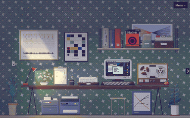
No. 25The room, perfected and expandedv24 perfected and expanded into a space to wander: a reading corner round the corner, machines under the desk, and nooks to get lost in.From No. 24.Its line in the genealogy